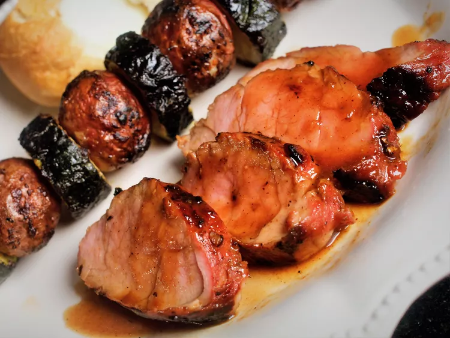

Marinated Grilled Pork Tenderloin

Description
This marinated pork loin cooks up nicely on the grill. It tastes best when marinated for 24 hours.
Ingredients
- ¼ cup honey
- ¼ cup soy sauce
- 4 teaspoons minced fresh ginger root
- 1 tablespoon minced garlic
Steps
- Make marinade: Whisk together honey, soy sauce, oyster sauce, brown sugar, ginger, ketchup, garlic, parsley, onion powder, cayenne pepper, and cinnamon in a medium bowl; pour into a resealable plastic bag.
- Place pork tenderloins into the bag; coat with marinade, squeeze out excess air, and seal the bag. Marinate in the refrigerator for at least 1 hour or up to 24 hours.
- Preheat the grill for medium heat and lightly oil the grate.
- Remove pork tenderloins from marinade; shake off excess. Discard remaining marinade.